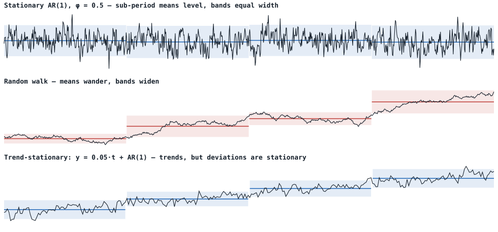
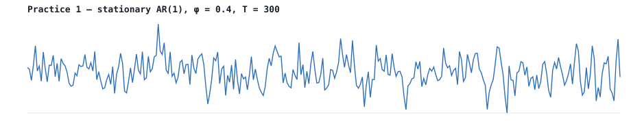
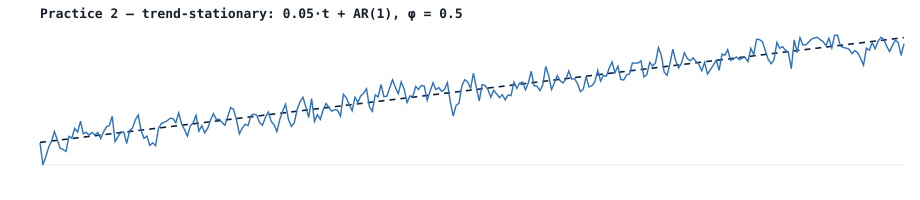
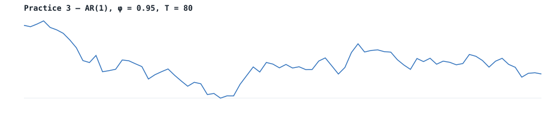
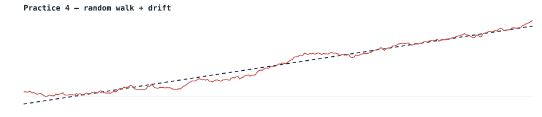
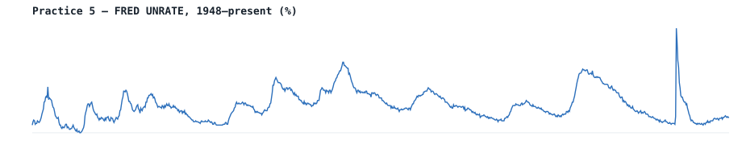

Building a Case
Module 2 · Stationarity as a Verdict, Not a Measurement
Gary Cornwall
Econ 6376 · The George Washington University
Prologue · The case reopens
Where we left off
Last module ended on a cliffhanger: two independent random walks handed us a beautiful and a fake-significant slope.
- : stationary, variance well-behaved.
- : random walk, variance grows without bound — spurious regression with anything.
- vs. : nearly indistinguishable in small samples.
Today’s question: given a series, which side of the boundary are we on?
Where we are on the mixing board
Module 2 turns on no new sliders. The master equation is the one from Module 1:
The DGP is still the AR(1) — and are the only active channels. What changes is the question we ask of it: is ?
One slider does make its first cameo: the deterministic trend . Deciding whether a trending series is trend-stationary or difference-stationary turns out to be part of the same testing problem — Act IV.
Stationarity is a verdict, not a measurement
Students want a one-test, one-number, one-answer protocol. Real data does not cooperate.
- No single piece of evidence is conclusive.
- We build a case from multiple sources — visual, ACF, formal tests, rules of thumb.
- When the evidence agrees, the answer is clear. When it conflicts, we lean on the cost asymmetry.

Sidney Paget, 1904. Deduction from evidence — under uncertainty.
The tool that does double duty:
- First difference = rate of change; second difference = acceleration. For economic series you rarely go past .
- is both the dependent variable in the Dickey–Fuller regression and the fix for a non-stationary series.
Act I · The armchair
“You see, but you do not observe.” Act I — visual inspection
What the eye can and can’t do
Three questions to ask any series you’re handed:
- Does it wander without returning to a level? (possible non-stationarity)
- Does the variance look like it changes over time? (variance violation)
- Is there an obvious trend? (then: trend-stationary or difference-stationary?)
Bottom line. Visual inspection is the cheapest test we have — and the most easily misled. It is a starting point, not a verdict.
What stationarity looks like
Sub-period means (bars) and ±2σ bands (shaded). Read them for the two things stationarity requires: a constant level and a constant spread.

Top: means level off, bands equal width — stationary. Middle: means wander, bands widen — random walk. Bottom: the series trends, but the deviations from the line are well-behaved — trend-stationary, the classic trap.
Act II · The forensic lab
“The evidence doesn’t lie — but you have to read it right.” Act II — the ACF and the formal tests
Exhibit A: the correlogram
You never see the true — only a noisy sample estimate. Crank up and it converges; shrink and push and it goes blind.
The instrument’s blind spot
Flip the bench above to Blind quiz: you get one series and must call it — unit root or just persistent? At your hit rate hovers near a coin flip. That blindness is why one witness is never enough — and it’s exactly where Act III begins.
What we’re testing
Start from the AR(1):
- (unit root, non-stationary) vs. (stationary). One-sided.
- First instinct that fails: OLS -stat on . Under , is a random walk — standard asymptotics break, and the statistic is not -distributed.
Building the DF regression
Subtract from both sides and let :
- Under the LHS is stationary — the regression is at least well-behaved on the left.
- tests exactly the unit root. The ADF adds to soak up serial correlation.
Three specifications — pick to match the plot
Critical values differ across specifications — and adding deterministic terms reduces power. There is no free lunch. (See the widget on the next slide: watch the null distribution slide left as you add terms.)
Why a different null distribution? Watch it build.
The DF looks like a -statistic, but its regressor is a random walk. We don’t derive the limit — we simulate it and read the 5% cutoff straight off the pile.
MacKinnon critical values
MacKinnon (1996) fit response-surface formulas to exactly the quantiles you just watched form — so you don’t re-simulate every time. Critical values depend on ; as , the drift 5% cutoff .
The function we keep using
MacKinnon’s values aren’t magic — they’re the empirical quantiles of the pile you just watched form. One function, reused all semester:
mackinnon_cv <- function(T, level = 0.05, spec = "drift") {
if (spec == "drift" && level == 0.05)
return(-2.86154 - 2.8903/T - 4.234/T^2 - 40.04/T^3)
if (spec == "drift" && level == 0.01)
return(-3.43035 - 6.5393/T - 16.786/T^2 - 79.433/T^3)
if (spec == "drift" && level == 0.10)
return(-2.56677 - 1.5384/T - 2.809/T^2)
stop("Specification not implemented.")
}At this returns ; our Monte-Carlo 5% quantile was . Same number, one from a formula, one from the pile.
ADF from scratch
Strip the mystery: the ADF is one regression and one -ratio. On a stationary AR(1) (, ):
set.seed(8675309)
y <- arima.sim(n = 200, list(ar = 0.7)) # stationary
dy <- diff(y)
X <- embed(dy, 5) # [Δy_t, Δy_{t-1}, …, Δy_{t-4}]
adf_reg <- lm(X[, 1] ~ y[5:(length(y)-1)] + X[, -1]) # Δy on y_{t-1} + 4 lags
adf_stat <- summary(adf_reg)$coefficients[2, "t value"] # t-ratio on y_{t-1}| Quantity | Value |
|---|---|
| ADF -statistic | |
| 5% MacKinnon CV () | |
| Reject the unit root? | Yes () |
The packaged version
Every semester after: let the package do it. Same series, same answer.
library(urca)
adf_pkg <- ur.df(y, type = "drift", lags = 4)
summary(adf_pkg) # reads off τμ and the critical values| Statistic | Value | 1% | 5% | 10% |
|---|---|---|---|---|
| (on ) |
Identical to the by-hand , to the decimal — same regression, same -ratio. Doing it once by hand demystifies the package — then we use the package.
Lag selection
How many lagged differences ? A bias–variance trade:
- Too few → residual serial correlation leaks into the test and biases it.
- Too many → wasted degrees of freedom, lower power.
ur.df(..., selectlags = "BIC")— our default for problem sets.- AIC selects more lags than BIC — know that going in.
- Schwert’s rule: start at and trim insignificant top lags.
KPSS: the reverse null
| Test | ||
|---|---|---|
| ADF | unit root | stationary |
| KPSS | stationary | unit root |
Opposite nulls → confirmatory analysis. Both have low power against close alternatives, so together they triangulate. When both fail to reject, the data genuinely cannot discriminate — an honest “I don’t know.”
KPSS in R
library(urca)
kpss_result <- ur.kpss(y, type = "mu") # "mu" = level, "tau" = trend
summary(kpss_result)| Statistic | Value | 10% | 5% | 1% |
|---|---|---|---|---|
| KPSS |
→ fail to reject stationarity, agreeing with the ADF. Watch the polarity: ADF rejects for stationarity at large negative values; KPSS rejects against it at large positive ones. This flips students up every semester.
The confirmatory grid — a reference card
The four outcomes, in one table (the live version is the Act III widget):
| ADF (: unit root) | KPSS (: stationary) | Verdict |
|---|---|---|
| Reject | Fail to reject | Stationary |
| Fail to reject | Reject | Unit root |
| Reject | Reject | Conflict — break / borderline |
| Fail to reject | Fail to reject | Honest “I don’t know” |
The last row is the one that matters: two tests of opposite nulls both failing means the data will not discriminate — usually a borderline or too small a sample.
Other tests — brief mentions
- Phillips–Perron (PP). Same null as ADF, but a non-parametric correction for serial correlation instead of lagged differences.
urca::ur.pp(). - Elliott–Rothenberg–Stock (ERS / DF-GLS). A more powerful ADF using GLS detrending — best exactly where standard ADF loses power (non-zero mean or trend).
urca::ur.ers(). If you remember one alternative, remember this one.
None of them solves the fundamental power problem. Different tools, same job — which is why we still build a case.
Act III · Differential diagnosis
“Everybody lies — including your test statistic.” Act III — low power & the borderline case
The single most important practical fact
Unit-root tests have low power against highly persistent stationary alternatives. At in a short sample, the ADF often fails to reject even though the series is stationary.
- The borderline cases are exactly where testing is most useful and most fragile.
- The cure is not a better test — it’s the build-a-case framework plus the cost asymmetry.
Two tests, opposite nulls — watch them disagree
ADF (: unit root) and KPSS (: stationary) together give confirmatory analysis. Crank toward 1, then Run 200: a truly stationary series lands on the right verdict only a fraction of the time. The scatter is the low power.
Act IV · The courtroom
“Beyond a reasonable doubt.” Act IV — the verdict and the cost of being wrong

A rule of thumb
From Dr. Jeff Mills: compare the spread of the differences to the spread of the levels,
For a stationary AR(1), : it’s at white noise and as . The cutoff flags . Fast, informal — a sanity check, not a test.
Dr. Jeff Mills — pretty cool guy.
Why the ratio works
For a stationary AR(1),
Their ratio collapses to
at white noise, as . If differencing shrinks the spread a lot, the levels were accumulating shocks.

Order of integration & the over-differencing tax
= number of differences to reach stationarity. already stationary; most common in economics; rare. Over-difference a trend-stationary series and you introduce a non-invertible MA(1) () — the tell-tale spike at lag 1.
How many licks to the center? For economic series, almost never more than two.
The over-differencing tax, in algebra
Say the truth is trend-stationary: with stationary. The correct move is to detrend. Difference instead:
- If is white noise, is an MA(1) with : , root on the unit circle → non-invertible.
- Poorly identified: ML pins at ; the ACF shows . A unit root in the MA polynomial — just as bad as one in the AR, only hidden.
Detrend or difference? The wrong cure leaves a fingerprint
A trending series is either trend-stationary (detrend it) or difference-stationary (difference it). Apply both and read the correlograms: over-differencing injects the lag-1 spike; under-differencing leaves a slow-decaying ACF.
The four exhibits, weighed together
- Visual — wander? variance change? trend?
- ACF — fast decay (stationary) or slow/none (unit root)?
- Tests — ADF (: unit root) + KPSS (: stationary), together.
- Rule of thumb — .
When all four agree, the verdict is clear. When they conflict — judgment, and the cost asymmetry.

The cost asymmetry
When in doubt, difference.
- Over-differencing: misspecified MA(1), but inference on coefficients of interest survives. Detectable.
- Spurious regression: a confidently wrong answer — big , high , doesn’t replicate. The output looks good.
The asymmetry is real. Spurious regression is the wrongful conviction you can’t undo.
Practice: run the method yourself
We built one case together (a synthetic known-truth series, then FRED UNRATE — genuinely borderline). Now five fresh series, increasing difficulty, full evidence bundle each:
- Easy stationary AR(1) — clear call.
- Trend-stationary — choose the right ADF spec or misclassify.
- Near unit root, short sample — honest “I don’t know” → difference.
- Random walk with drift — a trend-looking series that isn’t trend-stationary.
- FRED UNRATE — genuinely borderline; the lesson is the ambiguity.
Practice 1 · easy stationary AR(1)

| Evidence | Value | 5% CV / cutoff | Reading |
|---|---|---|---|
| ADF | Reject unit root | ||
| KPSS | Fail to reject stationarity | ||
| Ratio | Well above cutoff |
Verdict: Stationary. Easy call — all three agree.
Practice 2 · trend-stationary

| Evidence | Value | 5% CV | Reading |
|---|---|---|---|
| ADF (drift) | Fail — misreads the trend | ||
| ADF (trend) | Rejects unit root | ||
| KPSS (trend) | Fail to reject trend-stationarity |
Verdict: Trend-stationary. Lesson: pick the right ADF spec, or you misclassify.
Practice 3 · near unit root, short sample

| Evidence | Value | 5% CV / cutoff | Reading |
|---|---|---|---|
| ADF | Fail — low power | ||
| KPSS | Fail to reject | ||
| Ratio | Borderline |
Verdict: honest “I don’t know.” Both fail — the vs. ambiguity. Apply the cost asymmetry: difference.
Practice 4 · random walk with drift

| Evidence | Value | 5% CV | Reading |
|---|---|---|---|
| ADF (drift) | Fail | ||
| ADF (trend) | Fail — still can’t reject | ||
| KPSS (trend) | Rejects trend-stationarity |
Verdict: Difference-stationary. A trend-looking series need not be trend-stationary — the “trend” is a random walk with drift.
Practice 5 · FRED unemployment

| Evidence | Value | 5% CV / cutoff | Reading |
|---|---|---|---|
| ADF | Rejects unit root | ||
| KPSS | Rejects stationarity | ||
| Ratio | Favors differencing |
Verdict: genuinely borderline — the tests conflict, and the series has decades-long excursions consistent with high persistence. The ambiguity is the lesson; apply the cost asymmetry and difference.
Key takeaways
- Stationarity is a verdict, not a measurement — build a case from multiple sources.
- The DF regression rearranges the AR(1) so the LHS is stationary under ; the stat is the -stat on .
- Under that statistic is not normal — use MacKinnon values (they’re just the quantiles you simulated).
- ADF + KPSS (opposite nulls) give confirmatory analysis; both failing to reject = the data can’t discriminate.
- Cost asymmetry: spurious regression over-differencing. When in doubt, difference — unless it’s trend-stationary, then detrend.
Next time
- Beyond AR(1): general AR and MA.
- Reading the ACF and PACF together — the correlogram fingerprints of and .
- The Wold decomposition — why every well-behaved stationary series is AR + MA + noise.
Bring your laptop.
// ===================== ACF EVIDENCE BENCH =====================
makeACFbench = function (opts) {
opts = opts || {};
const root = document.createElement("div");
root.className = "widget";
root.innerHTML = `
<div class="tabs" role="tablist">
<button class="tab" role="tab" data-tab="ex" aria-selected="true">Explorer + Envelope</button>
<button class="tab" role="tab" data-tab="pr" aria-selected="false">Pairing</button>
<button class="tab" role="tab" data-tab="qz" aria-selected="false">Blind quiz</button>
</div>
<div class="wpanel active" data-panel="ex"><div class="card">
<div class="wbar">
<div class="ctl"><label>Persistence φ <span class="val" data-r="ex-phi-val">0.95</span></label><input type="range" data-r="ex-phi" min="0.50" max="1.00" step="0.01" value="0.95"></div>
<div class="ctl"><label>Sample T <span class="val" data-r="ex-T-val">80</span></label><input type="range" data-r="ex-T" min="30" max="600" step="10" value="80"></div>
<div class="ctl"><label> </label><button class="btn" data-r="ex-draw">New sample</button></div>
<div class="ctl"><label>Overlays</label><div style="display:flex; gap:0.9rem; flex-wrap:wrap; align-items:center;">
<span class="toggle-group"><label class="toggle"><input type="checkbox" data-r="ex-bands"> Bartlett</label><span class="info-wrap"><button class="info-btn" data-info="bartlett" aria-expanded="false">i</button><span class="info-pop"></span></span></span>
<span class="toggle-group"><label class="toggle"><input type="checkbox" data-r="ex-env" checked> Envelope</label><span class="info-wrap"><button class="info-btn" data-info="envelope" aria-expanded="false">i</button><span class="info-pop"></span></span></span>
<label class="toggle"><input type="checkbox" data-r="ex-overlay"> Overlay φ=1</label>
</div></div>
</div>
<div class="chartwrap"><svg data-r="ex-svg" width="1040" height="547" viewBox="0 0 760 400"></svg></div>
<div class="legend">
<span><span class="swatch bar" style="background:var(--stationary)"></span>sample r_k</span>
<span><span class="swatch" style="border-color:var(--true)"></span>true φ^k</span>
<span><span class="swatch bar" style="background:var(--stationary)"></span>50/80/95% fan</span>
<span><span class="swatch dash" style="border-color:var(--band)"></span>±1.96/√T</span>
</div>
<div class="readout" data-r="ex-readout"></div>
</div></div>
<div class="wpanel" data-panel="pr"><div class="card">
<div class="wbar">
<div class="ctl"><label>Left φ <span class="val" data-r="pr-phiL-val">0.95</span></label><input type="range" data-r="pr-phiL" min="0.50" max="1.00" step="0.01" value="0.95"></div>
<div class="ctl"><label>Right φ <span class="val" data-r="pr-phiR-val">1.00</span></label><input type="range" data-r="pr-phiR" min="0.50" max="1.00" step="0.01" value="1.00"></div>
<div class="ctl"><label>Sample T <span class="val" data-r="pr-T-val">80</span></label><input type="range" data-r="pr-T" min="30" max="600" step="10" value="80"></div>
<div class="ctl"><label> </label><button class="btn" data-r="pr-draw">New draw</button></div>
<div class="ctl"><label> </label><label class="toggle"><input type="checkbox" data-r="pr-hide"> Hide labels</label></div>
</div>
<div class="pairgrid">
<div><div class="panelhead"><span>Series A</span><span class="tag stat" data-r="pr-tagL">φ = 0.95</span></div><div class="chartwrap"><svg data-r="pr-svgL" width="660" height="431" viewBox="0 0 520 340"></svg></div></div>
<div><div class="panelhead"><span>Series B</span><span class="tag unit" data-r="pr-tagR">φ = 1.00</span></div><div class="chartwrap"><svg data-r="pr-svgR" width="660" height="431" viewBox="0 0 520 340"></svg></div></div>
</div>
<div class="readout" data-r="pr-readout"></div>
</div></div>
<div class="wpanel" data-panel="qz"><div class="card">
<div class="wbar">
<div class="ctl"><label>Difficulty (stationary φ)</label><select data-r="qz-diff"><option value="0.90">Beginner · 0.90</option><option value="0.95" selected>Intermediate · 0.95</option><option value="0.99">Advanced · 0.99</option></select></div>
<div class="ctl"><label>Sample T <span class="val" data-r="qz-T-val">80</span></label><input type="range" data-r="qz-T" min="30" max="300" step="10" value="80"></div>
<div class="ctl"><label> </label><span class="toggle-group"><label class="toggle"><input type="checkbox" data-r="qz-bands" checked> Bartlett</label><span class="info-wrap"><button class="info-btn" data-info="bartlett" aria-expanded="false">i</button><span class="info-pop"></span></span></span></div>
</div>
<div class="scorebar"><span class="score">Score <b data-r="qz-score">0</b> / <span data-r="qz-total">0</span></span><span class="verdict" data-r="qz-verdict">Read the correlogram — unit root, or just persistent?</span></div>
<div class="chartwrap" style="margin-top:0.6rem"><svg data-r="qz-svg" width="1040" height="493" viewBox="0 0 760 360"></svg></div>
<div class="quizbtns">
<button class="quizbtn" data-r="qz-stat">Persistent stationary<span class="sub">φ < 1 · shocks fade</span></button>
<button class="quizbtn" data-r="qz-unit">Unit root<span class="sub">φ = 1 · shocks permanent</span></button>
</div>
<div style="margin-top:0.8rem"><button class="btn ghost" data-r="qz-next" disabled>Next series →</button></div>
<div class="readout" data-r="qz-readout" style="display:none"></div>
</div></div>`;
const q = s => root.querySelector(`[data-r="${s}"]`);
const NS = "http://www.w3.org/2000/svg";
const el = (n, a) => { const e = document.createElementNS(NS, n); for (const k in a) e.setAttribute(k, a[k]); return e; };
const cssVar = n => getComputedStyle(document.documentElement).getPropertyValue(n).trim();
const mulberry32 = a => () => { a |= 0; a = a + 0x6D2B79F5 | 0; let t = Math.imul(a ^ a >>> 15, 1 | a); t = t + Math.imul(t ^ t >>> 7, 61 | t) ^ t; return ((t ^ t >>> 14) >>> 0) / 4294967296; };
const hashSeed = a => { a = a >>> 0; a = Math.imul(a ^ (a >>> 16), 2246822507); a = Math.imul(a ^ (a >>> 13), 3266489909); return (a ^ (a >>> 16)) >>> 0; };
const normF = rng => () => { let u = 0, v = 0; while (u === 0) u = rng(); while (v === 0) v = rng(); return Math.sqrt(-2 * Math.log(u)) * Math.cos(2 * Math.PI * v); };
function simAR1(phi, T, seed) { const rng = mulberry32(seed >>> 0), nm = normF(rng); let y = 0; for (let t = 0; t < 100; t++) y = phi * y + nm(); const out = new Float64Array(T); for (let t = 0; t < T; t++) { y = phi * y + nm(); out[t] = y; } return out; }
function sampleACF(y, K) { const T = y.length; let m = 0; for (let t = 0; t < T; t++) m += y[t]; m /= T; let c0 = 0; for (let t = 0; t < T; t++) { const d = y[t] - m; c0 += d * d; } c0 /= T; const r = new Float64Array(K + 1); r[0] = 1; for (let k = 1; k <= K; k++) { let ck = 0; for (let t = k; t < T; t++) ck += (y[t] - m) * (y[t - k] - m); r[k] = (ck / T) / c0; } return r; }
function pct(s, p) { const i = (s.length - 1) * p, lo = Math.floor(i), hi = Math.ceil(i); return lo === hi ? s[lo] : s[lo] + (s[hi] - s[lo]) * (i - lo); }
function envelope(phi, T, K, N, salt) {
const cols = []; for (let k = 0; k <= K; k++) cols.push(new Float64Array(N));
for (let i = 0; i < N; i++) { const seed = hashSeed(salt ^ hashSeed(i * 2654435761 ^ Math.round(phi * 1000))); const a = sampleACF(simAR1(phi, T, seed), K); for (let k = 0; k <= K; k++) cols[k][i] = a[k]; }
const mk = () => new Float64Array(K + 1); const o = { p025: mk(), p10: mk(), p25: mk(), p50: mk(), p75: mk(), p90: mk(), p975: mk() };
for (let k = 0; k <= K; k++) { const c = cols[k]; c.sort(); o.p025[k] = pct(c, 0.025); o.p10[k] = pct(c, 0.10); o.p25[k] = pct(c, 0.25); o.p50[k] = pct(c, 0.50); o.p75[k] = pct(c, 0.75); o.p90[k] = pct(c, 0.90); o.p975[k] = pct(c, 0.975); } return o;
}
function renderACF(svg, o) {
const vb = svg.viewBox.baseVal, W = vb.width, H = vb.height, mL = 46, mR = 16, mT = 16, mB = 38;
const iw = W - mL - mR, ih = H - mT - mB, K = o.K, ymin = -0.5, ymax = 1.0;
const sx = k => mL + (k / K) * iw, sy = v => mT + (ymax - v) / (ymax - ymin) * ih;
const c = { muted: cssVar('--muted'), lineSoft: cssVar('--line-soft'), trueC: cssVar('--true'), band: cssVar('--band'), unit: cssVar('--unitroot'), card: cssVar('--card') };
while (svg.firstChild) svg.removeChild(svg.firstChild);
[1, 0.5, 0, -0.5].forEach(v => { svg.appendChild(el('line', { x1: mL, y1: sy(v), x2: W - mR, y2: sy(v), stroke: v === 0 ? c.muted : c.lineSoft, 'stroke-width': v === 0 ? 1.2 : 1 })); const t = el('text', { x: mL - 8, y: sy(v) + 4, 'text-anchor': 'end', 'font-size': 13, fill: c.muted }); t.textContent = v.toFixed(1); svg.appendChild(t); });
const step = K > 24 ? 6 : 4; for (let k = 0; k <= K; k += step) { const t = el('text', { x: sx(k), y: sy(-0.5) + 20, 'text-anchor': 'middle', 'font-size': 13, fill: c.muted }); t.textContent = k; svg.appendChild(t); }
const xl = el('text', { x: mL + iw / 2, y: H - 4, 'text-anchor': 'middle', 'font-size': 13, fill: c.muted }); xl.textContent = 'lag k'; svg.appendChild(xl);
if (o.showBands) { const b = 1.96 / Math.sqrt(o.T); [b, -b].forEach(v => svg.appendChild(el('line', { x1: mL, y1: sy(v), x2: W - mR, y2: sy(v), stroke: c.band, 'stroke-width': 1.3, 'stroke-dasharray': '5 4' }))); }
const areaPath = (lo, hi) => { let d = 'M'; for (let k = 0; k <= K; k++) d += ` ${sx(k).toFixed(1)} ${sy(hi[k]).toFixed(1)}`; for (let k = K; k >= 0; k--) d += ` L ${sx(k).toFixed(1)} ${sy(lo[k]).toFixed(1)}`; return d + ' Z'; };
const fan = (e, fill) => { [[e.p025, e.p975, 0.10], [e.p10, e.p90, 0.13], [e.p25, e.p75, 0.20]].forEach(([lo, hi, op]) => svg.appendChild(el('path', { d: areaPath(lo, hi), fill, opacity: op, stroke: 'none' }))); let md = 'M'; for (let k = 0; k <= K; k++) md += ` ${k === 0 ? '' : 'L'} ${sx(k).toFixed(1)} ${sy(e.p50[k]).toFixed(1)}`; svg.appendChild(el('path', { d: md, fill: 'none', stroke: fill, 'stroke-width': 1.4, 'stroke-dasharray': '2 3', opacity: 0.8 })); };
const band = (e, fill) => svg.appendChild(el('path', { d: areaPath(e.p10, e.p90), fill, opacity: 0.13, stroke: fill, 'stroke-width': 0.8, 'stroke-opacity': 0.5 }));
if (o.overlayEnv) band(o.overlayEnv, c.unit);
if (o.env) fan(o.env, o.sampleColor);
const barW = Math.max(3, Math.min(11, (iw / (K + 1)) * 0.5)), base = sy(0);
for (let k = 0; k <= K; k++) { const yv = sy(o.sample[k]); svg.appendChild(el('rect', { x: (sx(k) - barW / 2).toFixed(1), y: Math.min(yv, base).toFixed(1), width: barW.toFixed(1), height: Math.abs(yv - base).toFixed(1), rx: 1.5, fill: o.sampleColor, opacity: 0.92 })); }
if (o.revealTrue) {
if (o.truePhi != null && o.truePhi < 1) { let d = 'M'; for (let k = 0; k <= K; k++) d += ` ${k === 0 ? '' : 'L'} ${sx(k).toFixed(1)} ${sy(Math.pow(o.truePhi, k)).toFixed(1)}`; svg.appendChild(el('path', { d, fill: 'none', stroke: c.trueC, 'stroke-width': 2 })); for (let k = 0; k <= K; k++) svg.appendChild(el('circle', { cx: sx(k), cy: sy(Math.pow(o.truePhi, k)), r: 2.4, fill: c.card, stroke: c.trueC, 'stroke-width': 1.5 })); }
else { svg.appendChild(el('line', { x1: mL, y1: sy(1), x2: W - mR, y2: sy(1), stroke: c.trueC, 'stroke-width': 2, 'stroke-dasharray': '7 5' })); const t = el('text', { x: W - mR - 4, y: sy(1) + 16, 'text-anchor': 'end', 'font-size': 12, fill: c.trueC }); t.textContent = 'unit root — never decays'; svg.appendChild(t); }
}
}
let SALT = 8675309; const bumpSalt = () => (SALT = hashSeed(SALT + 1013904223));
// ---- explorer ----
let exDraw;
{
const K = 36; let drawSalt = hashSeed(SALT);
exDraw = function () {
const p = +q('ex-phi').value, n = +q('ex-T').value;
q('ex-phi-val').textContent = p.toFixed(2); q('ex-T-val').textContent = n;
const seed = hashSeed(drawSalt ^ hashSeed(Math.round(p * 1000)) ^ (n * 40503));
const sample = sampleACF(simAR1(p, n, seed), K);
const envData = q('ex-env').checked ? envelope(p, n, K, 120, drawSalt) : null;
const overlayData = q('ex-overlay').checked ? envelope(1.0, n, K, 120, drawSalt ^ 0x9e3779b9) : null;
renderACF(q('ex-svg'), { sample, truePhi: p, K, T: n, showBands: q('ex-bands').checked, env: envData, overlayEnv: overlayData, sampleColor: cssVar('--stationary'), revealTrue: true });
q('ex-readout').innerHTML = '<span class="k">reading</span><br>' +
(p < 1 ? `True decay: ρ₁₀ = ${Math.pow(p, 10).toFixed(2)}, ρ₂₀ = ${Math.pow(p, 20).toFixed(2)}. ` : `φ = 1: no population ACF — shocks never forgotten. `) +
(envData ? `At T = ${n} the sample ρ₁₀ lands in <b>${envData.p10[10].toFixed(2)}–${envData.p90[10].toFixed(2)}</b> for the middle 80% of draws (95%: ${envData.p025[10].toFixed(2)}–${envData.p975[10].toFixed(2)}). ` : '') +
(q('ex-overlay').checked ? 'The firebrick φ=1 band shows the unit-root overlap.' : '');
};
q('ex-phi').oninput = exDraw; q('ex-T').oninput = exDraw;
['ex-bands', 'ex-env', 'ex-overlay'].forEach(id => q(id).onchange = exDraw);
q('ex-draw').onclick = () => { drawSalt = bumpSalt(); exDraw(); };
}
// ---- pairing ----
let prDraw;
{
const K = 36; let drawSalt = hashSeed(SALT ^ 0x51ed270b);
const tagFor = (elm, p) => { if (q('pr-hide').checked) { elm.textContent = '?'; elm.className = 'tag'; return; } if (p >= 1) { elm.textContent = 'φ = 1.00'; elm.className = 'tag unit'; } else { elm.textContent = 'φ = ' + p.toFixed(2); elm.className = 'tag stat'; } };
prDraw = function () {
const pL = +q('pr-phiL').value, pR = +q('pr-phiR').value, n = +q('pr-T').value;
q('pr-phiL-val').textContent = pL.toFixed(2); q('pr-phiR-val').textContent = pR.toFixed(2); q('pr-T-val').textContent = n;
const sL = sampleACF(simAR1(pL, n, hashSeed(drawSalt ^ hashSeed(Math.round(pL * 1000)) ^ (n * 40503))), K);
const sR = sampleACF(simAR1(pR, n, hashSeed((drawSalt ^ 0x2545f491) ^ hashSeed(Math.round(pR * 1000)) ^ (n * 40503))), K);
renderACF(q('pr-svgL'), { sample: sL, truePhi: pL, K, T: n, showBands: false, env: null, sampleColor: cssVar('--stationary'), revealTrue: !q('pr-hide').checked });
renderACF(q('pr-svgR'), { sample: sR, truePhi: pR, K, T: n, showBands: false, env: null, sampleColor: cssVar('--stationary'), revealTrue: !q('pr-hide').checked });
tagFor(q('pr-tagL'), pL); tagFor(q('pr-tagR'), pR);
const gap = Math.abs(pL - pR);
q('pr-readout').innerHTML = '<span class="k">reading</span><br>' + (gap <= 0.06 ? `φ differs by only ${gap.toFixed(2)} — in ${n} points the two correlograms are effectively indistinguishable.` : `φ differs by ${gap.toFixed(2)} — the decay speeds visibly diverge. The confusion is a near-boundary problem.`);
};
['pr-phiL', 'pr-phiR', 'pr-T'].forEach(id => q(id).oninput = prDraw);
q('pr-hide').onchange = prDraw;
q('pr-draw').onclick = () => { drawSalt = hashSeed(drawSalt + 2654435761); prDraw(); };
}
// ---- quiz ----
{
const K = 36; let score = 0, total = 0, qIndex = 0, current = null, answered = false;
function newSeries() {
answered = false; qIndex++;
const salt = hashSeed(SALT ^ (qIndex * 2654435761)), isUnit = (salt % 2) === 0;
const phi = isUnit ? 1.0 : +q('qz-diff').value, n = +q('qz-T').value; q('qz-T-val').textContent = n;
const sample = sampleACF(simAR1(phi, n, hashSeed(salt ^ 0x27d4eb2f)), K);
current = { isUnit, phi, n, sample };
renderACF(q('qz-svg'), { sample, truePhi: phi, K, T: n, showBands: q('qz-bands').checked, env: null, sampleColor: cssVar('--ink'), revealTrue: false });
q('qz-stat').disabled = false; q('qz-unit').disabled = false; q('qz-next').disabled = true;
q('qz-stat').className = 'quizbtn'; q('qz-unit').className = 'quizbtn';
q('qz-verdict').textContent = 'Read the correlogram — unit root, or just persistent?'; q('qz-verdict').className = 'verdict';
q('qz-readout').style.display = 'none';
}
function answer(guessUnit) {
if (answered || !current) return; answered = true;
const right = guessUnit === current.isUnit; total++; if (right) score++;
q('qz-score').textContent = score; q('qz-total').textContent = total;
renderACF(q('qz-svg'), { sample: current.sample, truePhi: current.phi, K, T: current.n, showBands: q('qz-bands').checked, env: null, sampleColor: right ? cssVar('--stationary') : cssVar('--unitroot'), revealTrue: true });
(guessUnit ? q('qz-unit') : q('qz-stat')).className = 'quizbtn ' + (right ? 'correct' : 'wrong');
q('qz-stat').disabled = true; q('qz-unit').disabled = true; q('qz-next').disabled = false;
q('qz-verdict').textContent = right ? '✓ Correct.' : '✗ Not this time.'; q('qz-verdict').className = 'verdict ' + (right ? 'right' : 'wrong');
q('qz-readout').style.display = '';
q('qz-readout').innerHTML = '<span class="k">the truth</span><br>' +
(current.isUnit ? `This was a <b>unit root</b> (φ = 1) — the population ACF never decays (dashed line). ` : `This was <b>stationary</b>, φ = ${current.phi.toFixed(2)}: the true ρ_k = φ^k does curl to zero, just past where ${current.n} points can resolve it. `) +
`On the ACF alone this is a coin flip near the boundary — which is why you also run ADF + KPSS and the variance ratio.`;
}
q('qz-stat').onclick = () => answer(false); q('qz-unit').onclick = () => answer(true); q('qz-next').onclick = newSeries;
q('qz-diff').onchange = () => { if (answered || !current) newSeries(); };
q('qz-T').oninput = () => { q('qz-T-val').textContent = q('qz-T').value; if (!answered) newSeries(); };
q('qz-bands').onchange = () => { if (!current) return; renderACF(q('qz-svg'), { sample: current.sample, truePhi: current.phi, K, T: current.n, showBands: q('qz-bands').checked, env: null, sampleColor: answered ? cssVar('--stationary') : cssVar('--ink'), revealTrue: answered }); };
newSeries();
}
// ---- info popovers ----
{
const INFO = {
bartlett: { title: 'Bartlett significance bands', body: 'The dashed lines mark ±1.96/√T. Under the white-noise null each sample autocorrelation is ≈ N(0, 1/T), so any bar inside the band is indistinguishable from zero — the white-noise special case of Bartlett’s formula.', ref: 'Enders, Ch. 2 §3, pp. 64–72 · Module 1 notes, ACF section.' },
envelope: { title: 'Sampling envelope', body: 'Simulate many series, take each one’s sample ACF, shade where r_k lands (nested 50/80/95% bands). Width = sampling variability; the gap below the navy φ^k curve = small-sample bias. Bartlett predicts the width grows sharply as φ → 1 — the low-power problem, visible.', ref: 'Enders, Ch. 2 §3 · Module 2 notes §2.8.' }
};
root.querySelectorAll('.info-btn').forEach(btn => {
const data = INFO[btn.dataset.info]; if (!data) return;
const pop = btn.parentElement.querySelector('.info-pop');
if (pop) pop.innerHTML = `<strong>${data.title}</strong><span>${data.body}</span><span class="ref">${data.ref}</span>`;
btn.addEventListener('click', e => { e.stopPropagation(); const open = btn.getAttribute('aria-expanded') === 'true'; root.querySelectorAll('.info-btn[aria-expanded="true"]').forEach(b => b.setAttribute('aria-expanded', 'false')); btn.setAttribute('aria-expanded', open ? 'false' : 'true'); });
});
}
// ---- tabs ----
{
const draws = { ex: exDraw, pr: prDraw, qz: null };
root.querySelectorAll('.tab').forEach(tab => tab.addEventListener('click', () => {
const key = tab.dataset.tab;
root.querySelectorAll('.tab').forEach(t => t.setAttribute('aria-selected', t === tab ? 'true' : 'false'));
root.querySelectorAll('.wpanel').forEach(p => p.classList.toggle('active', p.dataset.panel === key));
if (draws[key]) draws[key]();
}));
}
exDraw();
return root;
}// ===================== DF-NULL DISTRIBUTION =====================
makeDFnull = function (opts) {
opts = opts || {};
const root = document.createElement("div");
root.className = "widget";
root.innerHTML = `
<div class="card">
<div class="wbar">
<div class="ctl"><label>Specification <span class="info-wrap"><button class="info-btn" data-info="dfstat" aria-expanded="false">i</button><span class="info-pop"></span></span></label>
<select data-r="spec"><option value="none">None — τ</option><option value="drift" selected>Drift — τμ</option><option value="trend">Trend — ττ</option></select></div>
<div class="ctl"><label>Sample T <span class="val" data-r="T-val">200</span></label><input type="range" data-r="T" min="25" max="500" step="5" value="200"></div>
<div class="ctl"><label>Speed <span class="val" data-r="spd-val">40</span></label><input type="range" data-r="spd" min="5" max="150" step="5" value="40"></div>
<div class="ctl"><label> </label><div style="display:flex; gap:0.5rem;"><button class="btn" data-r="play">⏸ Pause</button><button class="btn ghost" data-r="replay">Replay</button></div></div>
<div class="ctl"><label>Overlays <span class="info-wrap"><button class="info-btn" data-info="mackinnon" aria-expanded="false">i</button><span class="info-pop"></span></span></label>
<label class="toggle"><input type="checkbox" data-r="alt"> Overlay φ=0.9 (power)</label></div>
</div>
<div class="chartwrap"><svg data-r="svg" width="1000" height="489" viewBox="0 0 900 440"></svg></div>
<div class="legend">
<span><span class="swatch bar" style="background:var(--stationary)"></span>DF τ under H₀</span>
<span><span class="swatch" style="border-color:var(--unitroot)"></span>N(0,1)</span>
<span><span class="swatch" style="border-color:var(--stationary)"></span>our 5% quantile</span>
<span><span class="swatch dash" style="border-color:var(--unitroot)"></span>normal 5% (−1.65)</span>
<span><span class="swatch dot" style="border-color:var(--muted)"></span>MacKinnon (∞)</span>
</div>
<div class="stats">
<div class="stat"><span class="k">draws</span><span class="v" data-r="s-n">0</span></div>
<div class="stat"><span class="k">our 5% quantile</span><span class="v" data-r="s-q">—</span></div>
<div class="stat"><span class="k">MacKinnon ref (∞)</span><span class="v" data-r="s-mk">—</span></div>
<div class="stat alarm"><span class="k">reject at −1.65 (naive normal)</span><span class="v" data-r="s-size">— <small>target 5%</small></span></div>
</div>
</div>`;
const q = s => root.querySelector(`[data-r="${s}"]`);
const NS = "http://www.w3.org/2000/svg";
const el = (n, a) => { const e = document.createElementNS(NS, n); for (const k in a) e.setAttribute(k, a[k]); return e; };
const cssVar = n => getComputedStyle(document.documentElement).getPropertyValue(n).trim();
const mulberry32 = a => () => { a |= 0; a = a + 0x6D2B79F5 | 0; let t = Math.imul(a ^ a >>> 15, 1 | a); t = t + Math.imul(t ^ t >>> 7, 61 | t) ^ t; return ((t ^ t >>> 14) >>> 0) / 4294967296; };
const hashSeed = a => { a = a >>> 0; a = Math.imul(a ^ (a >>> 16), 2246822507); a = Math.imul(a ^ (a >>> 13), 3266489909); return (a ^ (a >>> 16)) >>> 0; };
const normF = rng => () => { let u = 0, v = 0; while (u === 0) u = rng(); while (v === 0) v = rng(); return Math.sqrt(-2 * Math.log(u)) * Math.cos(2 * Math.PI * v); };
function simSeries(phi, T, seed) { const rng = mulberry32(seed >>> 0), nm = normF(rng); const out = new Float64Array(T); if (phi >= 1) { let y = 0; for (let t = 0; t < T; t++) { y += nm(); out[t] = y; } } else { let y = 0; for (let t = 0; t < 100; t++) y = phi * y + nm(); for (let t = 0; t < T; t++) { y = phi * y + nm(); out[t] = y; } } return out; }
function matInv(A) { const n = A.length; const M = A.map((row, i) => row.concat(Array.from({ length: n }, (_, j) => i === j ? 1 : 0))); for (let col = 0; col < n; col++) { let piv = col; for (let r = col + 1; r < n; r++) if (Math.abs(M[r][col]) > Math.abs(M[piv][col])) piv = r; const tmp = M[col]; M[col] = M[piv]; M[piv] = tmp; const d = M[col][col]; for (let j = 0; j < 2 * n; j++) M[col][j] /= d; for (let r = 0; r < n; r++) { if (r === col) continue; const f = M[r][col]; for (let j = 0; j < 2 * n; j++) M[r][j] -= f * M[col][j]; } } return M.map(row => row.slice(n)); }
function tStatLast(cols, y) { const p = cols.length, n = y.length; const XtX = Array.from({ length: p }, () => new Array(p).fill(0)); const Xty = new Array(p).fill(0); for (let i = 0; i < p; i++) { for (let j = i; j < p; j++) { let s = 0; for (let k = 0; k < n; k++) s += cols[i][k] * cols[j][k]; XtX[i][j] = s; XtX[j][i] = s; } let s2 = 0; for (let k = 0; k < n; k++) s2 += cols[i][k] * y[k]; Xty[i] = s2; } const inv = matInv(XtX); const beta = new Array(p).fill(0); for (let i = 0; i < p; i++) { let s = 0; for (let j = 0; j < p; j++) s += inv[i][j] * Xty[j]; beta[i] = s; } let sse = 0; for (let k = 0; k < n; k++) { let yh = 0; for (let i = 0; i < p; i++) yh += beta[i] * cols[i][k]; const e = y[k] - yh; sse += e * e; } const s2 = sse / (n - p); return beta[p - 1] / Math.sqrt(s2 * inv[p - 1][p - 1]); }
function dfStat(y, spec) { const T = y.length, n = T - 1; const dy = new Float64Array(n), ylag = new Float64Array(n); for (let i = 0; i < n; i++) { dy[i] = y[i + 1] - y[i]; ylag[i] = y[i]; } let cols; if (spec === 'none') cols = [ylag]; else if (spec === 'drift') { const one = new Float64Array(n).fill(1); cols = [one, ylag]; } else { const one = new Float64Array(n).fill(1); const tt = new Float64Array(n); for (let i = 0; i < n; i++) tt[i] = i + 1; cols = [one, tt, ylag]; } return tStatLast(cols, dy); }
const MK5 = { none: -1.94, drift: -2.86, trend: -3.41 };
const dnorm = x => Math.exp(-0.5 * x * x) / Math.sqrt(2 * Math.PI);
const quantile = (s, p) => { if (!s.length) return NaN; const i = (s.length - 1) * p, lo = Math.floor(i), hi = Math.ceil(i); return lo === hi ? s[lo] : s[lo] + (s[hi] - s[lo]) * (i - lo); };
const XMIN = -6, XMAX = 4.5, NB = 68, YMAX = 0.72, MAXN = 8000;
let statsNull = [], statsAlt = [], sortedNull = [], seedCtr = 0, playing = true, dirty = true;
const reset = () => { statsNull = []; statsAlt = []; sortedNull = []; seedCtr = 0; dirty = true; };
function addDraws(m) { const spec = q('spec').value, T = +q('T').value, showAlt = q('alt').checked; for (let i = 0; i < m && statsNull.length < MAXN; i++) { seedCtr++; statsNull.push(dfStat(simSeries(1.0, T, hashSeed(seedCtr * 2654435761)), spec)); if (showAlt) statsAlt.push(dfStat(simSeries(0.9, T, hashSeed(seedCtr * 40503 + 7)), spec)); } sortedNull = statsNull.slice().sort((a, b) => a - b); dirty = true; }
function hist(data) { const bw = (XMAX - XMIN) / NB, counts = new Array(NB).fill(0); for (const v of data) { if (v < XMIN || v >= XMAX) continue; counts[Math.floor((v - XMIN) / bw)]++; } return { dens: counts.map(c => c / (data.length * bw)), bw }; }
function render() {
const svg = q('svg'), W = 900, H = 440, mL = 40, mR = 16, mT = 20, mB = 42;
const iw = W - mL - mR, ih = H - mT - mB;
const sx = x => mL + (x - XMIN) / (XMAX - XMIN) * iw, sy = d => mT + (YMAX - d) / YMAX * ih;
const c = { muted: cssVar('--muted'), lineSoft: cssVar('--line-soft'), blue: cssVar('--stationary'), red: cssVar('--unitroot'), good: cssVar('--good') };
while (svg.firstChild) svg.removeChild(svg.firstChild);
[0, 0.2, 0.4, 0.6].forEach(d => { svg.appendChild(el('line', { x1: mL, y1: sy(d), x2: W - mR, y2: sy(d), stroke: c.lineSoft, 'stroke-width': 1 })); const t = el('text', { x: mL - 6, y: sy(d) + 4, 'text-anchor': 'end', 'font-size': 12, fill: c.muted }); t.textContent = d.toFixed(1); svg.appendChild(t); });
for (let x = -6; x <= 4; x++) { const t = el('text', { x: sx(x), y: sy(0) + 20, 'text-anchor': 'middle', 'font-size': 12, fill: c.muted }); t.textContent = x; svg.appendChild(t); }
svg.appendChild(el('line', { x1: mL, y1: sy(0), x2: W - mR, y2: sy(0), stroke: c.muted, 'stroke-width': 1 }));
const xl = el('text', { x: mL + iw / 2, y: H - 6, 'text-anchor': 'middle', 'font-size': 13, fill: c.muted }); xl.textContent = 'Dickey–Fuller τ (t-ratio on γ̂ under H₀: φ = 1)'; svg.appendChild(xl);
const empQ = sortedNull.length ? quantile(sortedNull, 0.05) : NaN;
if (!isNaN(empQ)) svg.appendChild(el('rect', { x: mL, y: mT, width: Math.max(0, sx(empQ) - mL), height: ih, fill: c.blue, opacity: 0.06 }));
if (statsNull.length) { const { dens, bw } = hist(statsNull); const barW = (iw / (XMAX - XMIN)) * bw; dens.forEach((d, i) => { if (d <= 0) return; svg.appendChild(el('rect', { x: sx(XMIN + i * bw).toFixed(1), y: sy(d).toFixed(1), width: Math.max(0.5, barW - 0.6).toFixed(1), height: (sy(0) - sy(d)).toFixed(1), fill: c.blue, opacity: 0.55 })); }); }
if (q('alt').checked && statsAlt.length) { const { dens, bw } = hist(statsAlt); let d = 'M'; for (let i = 0; i < dens.length; i++) { const x0 = XMIN + i * bw; d += ` ${sx(x0).toFixed(1)} ${sy(dens[i]).toFixed(1)} L ${sx(x0 + bw).toFixed(1)} ${sy(dens[i]).toFixed(1)} L`; } d = d.slice(0, -2); svg.appendChild(el('path', { d, fill: 'none', stroke: c.good, 'stroke-width': 1.6, opacity: 0.85 })); }
let nd = 'M'; for (let px = 0; px <= 200; px++) { const x = XMIN + (XMAX - XMIN) * px / 200; nd += ` ${px === 0 ? '' : 'L'} ${sx(x).toFixed(1)} ${sy(dnorm(x)).toFixed(1)}`; } svg.appendChild(el('path', { d: nd, fill: 'none', stroke: c.red, 'stroke-width': 2.2 }));
const vline = (x, color, dash, label, up) => { if (isNaN(x)) return; svg.appendChild(el('line', { x1: sx(x), y1: mT, x2: sx(x), y2: sy(0), stroke: color, 'stroke-width': 2, 'stroke-dasharray': dash })); const t = el('text', { x: sx(x), y: mT + (up ? 14 : 30), 'text-anchor': 'middle', 'font-size': 12, fill: color, 'font-weight': 600 }); t.textContent = label; svg.appendChild(t); };
vline(-1.645, c.red, '5 4', '−1.65', true); vline(MK5[q('spec').value], c.muted, '2 3', 'MK ∞', false); if (!isNaN(empQ)) vline(empQ, c.blue, '0', empQ.toFixed(2), true);
q('s-n').textContent = statsNull.length.toLocaleString();
q('s-q').textContent = isNaN(empQ) ? '—' : empQ.toFixed(3);
q('s-mk').textContent = MK5[q('spec').value].toFixed(2);
if (sortedNull.length) { let below = 0; for (const v of sortedNull) { if (v < -1.645) below++; else break; } q('s-size').innerHTML = (100 * below / sortedNull.length).toFixed(1) + '% <small>target 5%</small>'; } else q('s-size').innerHTML = '— <small>target 5%</small>';
}
// info popovers
{
const INFO = {
dfstat: { title: 'The Dickey–Fuller τ', body: 'The ordinary t-ratio on γ̂ in Δy_t = … + γy_{t-1} + ε_t. Under the unit-root null y_{t-1} is a random walk, so OLS asymptotics fail and τ is not t- or normal — its limit is a functional of Brownian motion. We don’t derive it; we simulate it.', ref: 'Enders Ch. 4 p. 213 (Dickey & Fuller 1981) · Phillips (1987) / Hamilton Ch. 17 · Module 2 notes §2.5.' },
mackinnon: { title: 'Where critical values come from', body: 'The 5% critical value is just the 5% quantile of this simulated null. MacKinnon (1996) ran exactly this Monte Carlo across sample sizes and specs and fit response-surface formulas to the quantiles — empirical facts about the picture on screen, not received wisdom.', ref: 'MacKinnon (1996), J. Appl. Econometrics 11 · Enders Ch. 4 p. 215 · Module 2 notes §2.5.' }
};
root.querySelectorAll('.info-btn').forEach(btn => {
const data = INFO[btn.dataset.info]; if (!data) return;
const pop = btn.parentElement.querySelector('.info-pop');
if (pop) pop.innerHTML = `<strong>${data.title}</strong><span>${data.body}</span><span class="ref">${data.ref}</span>`;
btn.addEventListener('click', e => { e.stopPropagation(); const open = btn.getAttribute('aria-expanded') === 'true'; root.querySelectorAll('.info-btn[aria-expanded="true"]').forEach(b => b.setAttribute('aria-expanded', 'false')); btn.setAttribute('aria-expanded', open ? 'false' : 'true'); });
});
}
const setPlaying = p => { playing = p; q('play').textContent = playing ? '⏸ Pause' : '▶ Play'; };
q('spec').onchange = () => { reset(); render(); };
q('T').oninput = () => { q('T-val').textContent = q('T').value; reset(); render(); };
q('spd').oninput = () => { q('spd-val').textContent = q('spd').value; };
q('play').onclick = () => setPlaying(!playing);
q('replay').onclick = () => { reset(); setPlaying(true); render(); };
q('alt').onchange = () => { reset(); render(); };
let last = null;
function tick(now) {
if (!document.contains(root)) return;
if (last === null) last = now;
const dt = Math.min(0.1, (now - last) / 1000); last = now;
const sec = root.closest("section");
const onSlide = !!sec && sec.classList.contains("present");
if (playing && onSlide && statsNull.length < MAXN) addDraws(Math.max(1, Math.round(+q('spd').value * 6 * dt)));
if (dirty) { render(); dirty = false; }
requestAnimationFrame(tick);
}
render();
requestAnimationFrame(tick);
return root;
}// ===================== CONFIRMATORY ADF×KPSS 2×2 =====================
makeConfirm = function (opts) {
opts = opts || {};
const B0 = 4, B1 = 0.14;
const KPSS_CV = { level: 0.463, trend: 0.146 };
const root = document.createElement("div");
root.className = "widget";
root.innerHTML = `
<div class="card">
<div class="wbar">
<div class="ctl"><label>Persistence φ <span class="val" data-r="phi-v">0.95</span></label>
<input type="range" data-r="phi" min="0.50" max="1.00" step="0.01" value="0.95"></div>
<div class="ctl"><label>Sample T <span class="val" data-r="T-v">120</span></label>
<input type="range" data-r="T" min="40" max="500" step="10" value="120"></div>
<div class="ctl"><label>Deterministic part</label>
<label class="toggle"><input type="checkbox" data-r="trend"> Linear trend</label></div>
<div class="ctl"><label> </label>
<div style="display:flex; gap:0.5rem;">
<button class="btn" data-r="draw">New sample</button>
<button class="btn ghost" data-r="run">Run 200 ▸</button>
</div></div>
</div>
<div class="serieshead"><span class="t">The series on trial</span><span class="truth" data-r="truth"></span></div>
<div class="chartwrap"><svg data-r="svg" width="1000" height="150" viewBox="0 0 1000 150"></svg></div>
<div class="split2">
<div>
<div class="grid2">
<div class="ghead"></div>
<div class="ghead colh">KPSS: fails to reject<br><span>→ stationary</span></div>
<div class="ghead colh">KPSS: rejects<br><span>→ non-stationary</span></div>
<div class="ghead rowh">ADF: rejects<br><span>→ stationary</span></div>
<div class="cell" data-cell="stat" data-r="c-stat"><span class="truthbadge">✓ TRUTH</span>
<div class="cname">STATIONARY</div><div class="csub">Both agree — I(0). Shocks fade.</div><div class="cagg" data-r="a-stat"></div></div>
<div class="cell" data-cell="conflict" data-r="c-conflict"><span class="truthbadge">✓ TRUTH</span>
<div class="cname">CONFLICT</div><div class="csub">Both reject — break or fractional? Dig deeper.</div><div class="cagg" data-r="a-conflict"></div></div>
<div class="ghead rowh">ADF: fails<br><span>→ unit root</span></div>
<div class="cell" data-cell="unknown" data-r="c-unknown"><span class="truthbadge">✓ TRUTH</span>
<div class="cname">“I DON’T KNOW”</div><div class="csub">Neither rejects — low power. Can't discriminate.</div><div class="cagg" data-r="a-unknown"></div></div>
<div class="cell" data-cell="unit" data-r="c-unit"><span class="truthbadge">✓ TRUTH</span>
<div class="cname">UNIT ROOT</div><div class="csub">Both agree — I(1). Shocks permanent.</div><div class="cagg" data-r="a-unit"></div></div>
</div>
<div class="legend">
<span><span class="dotc" style="background:var(--stationary)"></span>stationary</span>
<span><span class="dotc" style="background:var(--unitroot)"></span>unit root</span>
<span><span class="dotc" style="background:var(--conflict)"></span>conflict</span>
<span><span class="dotc" style="background:var(--unknown)"></span>can't tell</span>
</div>
</div>
<div class="tests">
<div class="test">
<h3>ADF <span data-r="adf-spec">(drift)</span>
<span class="info-wrap"><button class="info-btn" data-info="adf" aria-expanded="false">i</button><span class="info-pop"></span></span></h3>
<div class="rows"><span class="k">τ statistic</span><span class="v" data-r="adf-tau">—</span>
<span class="k">5% crit. value</span><span class="v" data-r="adf-cv">—</span></div>
<div class="decision" data-r="adf-dec">—</div>
</div>
<div class="test">
<h3>KPSS <span data-r="kpss-spec">(level)</span>
<span class="info-wrap"><button class="info-btn" data-info="kpss" aria-expanded="false">i</button><span class="info-pop"></span></span></h3>
<div class="rows"><span class="k">η statistic</span><span class="v" data-r="kpss-eta">—</span>
<span class="k">5% crit. value</span><span class="v" data-r="kpss-cv">—</span></div>
<div class="decision" data-r="kpss-dec">—</div>
</div>
<div class="hint" data-r="verdict-line"></div>
</div>
</div>
</div>`;
const q = s => root.querySelector(`[data-r="${s}"]`);
const NS = "http://www.w3.org/2000/svg";
const el = (n, a) => { const e = document.createElementNS(NS, n); for (const k in a) e.setAttribute(k, a[k]); return e; };
const cssVar = n => getComputedStyle(document.documentElement).getPropertyValue(n).trim();
const mulberry32 = a => () => { a |= 0; a = a + 0x6D2B79F5 | 0; let t = Math.imul(a ^ a >>> 15, 1 | a); t = t + Math.imul(t ^ t >>> 7, 61 | t) ^ t; return ((t ^ t >>> 14) >>> 0) / 4294967296; };
const hashSeed = a => { a = a >>> 0; a = Math.imul(a ^ (a >>> 16), 2246822507); a = Math.imul(a ^ (a >>> 13), 3266489909); return (a ^ (a >>> 16)) >>> 0; };
const normF = rng => () => { let u = 0, v = 0; while (u === 0) u = rng(); while (v === 0) v = rng(); return Math.sqrt(-2 * Math.log(u)) * Math.cos(2 * Math.PI * v); };
function simSeries(phi, T, ht, seed) { const rng = mulberry32(seed >>> 0), nm = normF(rng); const out = new Float64Array(T); let u = 0;
if (phi >= 1) { for (let t = 0; t < T; t++) { u += nm(); out[t] = (ht ? B0 + B1 * (t + 1) : 0) + u; } }
else { for (let t = 0; t < 100; t++) u = phi * u + nm(); for (let t = 0; t < T; t++) { u = phi * u + nm(); out[t] = (ht ? B0 + B1 * (t + 1) : 0) + u; } } return out; }
function matInv(A) { const n = A.length; const M = A.map((row, i) => row.concat(Array.from({ length: n }, (_, j) => i === j ? 1 : 0)));
for (let col = 0; col < n; col++) { let piv = col; for (let r = col + 1; r < n; r++) if (Math.abs(M[r][col]) > Math.abs(M[piv][col])) piv = r;
const tmp = M[col]; M[col] = M[piv]; M[piv] = tmp; const d = M[col][col]; for (let j = 0; j < 2 * n; j++) M[col][j] /= d;
for (let r = 0; r < n; r++) { if (r === col) continue; const f = M[r][col]; for (let j = 0; j < 2 * n; j++) M[r][j] -= f * M[col][j]; } } return M.map(row => row.slice(n)); }
function tStatLast(cols, y) { const p = cols.length, n = y.length; const XtX = Array.from({ length: p }, () => new Array(p).fill(0)); const Xty = new Array(p).fill(0);
for (let i = 0; i < p; i++) { for (let j = i; j < p; j++) { let s = 0; for (let k = 0; k < n; k++) s += cols[i][k] * cols[j][k]; XtX[i][j] = s; XtX[j][i] = s; } let s2 = 0; for (let k = 0; k < n; k++) s2 += cols[i][k] * y[k]; Xty[i] = s2; }
const inv = matInv(XtX); const beta = new Array(p).fill(0); for (let i = 0; i < p; i++) { let s = 0; for (let j = 0; j < p; j++) s += inv[i][j] * Xty[j]; beta[i] = s; }
let sse = 0; for (let k = 0; k < n; k++) { let yh = 0; for (let i = 0; i < p; i++) yh += beta[i] * cols[i][k]; const e = y[k] - yh; sse += e * e; } const s2 = sse / (n - p); return beta[p - 1] / Math.sqrt(s2 * inv[p - 1][p - 1]); }
function dfStat(y, spec) { const T = y.length, n = T - 1; const dy = new Float64Array(n), ylag = new Float64Array(n); for (let i = 0; i < n; i++) { dy[i] = y[i + 1] - y[i]; ylag[i] = y[i]; }
let cols; if (spec === 'drift') { const one = new Float64Array(n).fill(1); cols = [one, ylag]; }
else { const one = new Float64Array(n).fill(1); const tt = new Float64Array(n); for (let i = 0; i < n; i++) tt[i] = i + 1; cols = [one, tt, ylag]; } return tStatLast(cols, dy); }
function mkCV(spec, T) { return spec === 'trend' ? -3.41049 - 4.039 / T - 17.83 / (T * T) : -2.86154 - 2.8903 / T - 4.234 / (T * T) - 40.04 / (T * T * T); }
function detrendResid(y, spec) { const T = y.length;
if (spec === 'level') { let m = 0; for (let t = 0; t < T; t++) m += y[t]; m /= T; const e = new Float64Array(T); for (let t = 0; t < T; t++) e[t] = y[t] - m; return e; }
let s1 = T, st = 0, stt = 0, sy = 0, sty = 0; for (let t = 0; t < T; t++) { const x = t + 1; st += x; stt += x * x; sy += y[t]; sty += x * y[t]; }
const det = s1 * stt - st * st, a = (stt * sy - st * sty) / det, b = (s1 * sty - st * sy) / det; const e = new Float64Array(T); for (let t = 0; t < T; t++) e[t] = y[t] - (a + b * (t + 1)); return e; }
function kpss(y, spec) { const T = y.length, e = detrendResid(y, spec); const S = new Float64Array(T); let run = 0; for (let t = 0; t < T; t++) { run += e[t]; S[t] = run; } let sumS2 = 0; for (let t = 0; t < T; t++) sumS2 += S[t] * S[t];
const l = Math.floor(4 * Math.pow(T / 100, 0.25)); let g0 = 0; for (let t = 0; t < T; t++) g0 += e[t] * e[t]; g0 /= T; let lrv = g0;
for (let j = 1; j <= l; j++) { let gj = 0; for (let t = j; t < T; t++) gj += e[t] * e[t - j]; gj /= T; lrv += 2 * (1 - j / (l + 1)) * gj; } return sumS2 / (T * T * lrv); }
function classify(phi, T, ht, seed) { const y = simSeries(phi, T, ht, seed); const aSpec = ht ? 'trend' : 'drift', kSpec = ht ? 'trend' : 'level';
const tau = dfStat(y, aSpec), cv = mkCV(aSpec, T), eta = kpss(y, kSpec), kcv = KPSS_CV[kSpec]; const adfRej = tau < cv, kpssRej = eta > kcv;
let cell; if (adfRej && !kpssRej) cell = 'stat'; else if (!adfRej && kpssRej) cell = 'unit'; else if (adfRej && kpssRej) cell = 'conflict'; else cell = 'unknown';
return { y, tau, cv, eta, kcv, adfRej, kpssRej, cell }; }
const CELLS = ['stat', 'unit', 'conflict', 'unknown'];
const CNAME = { stat: 'STATIONARY', unit: 'UNIT ROOT', conflict: 'CONFLICT', unknown: '“I don’t know”' };
function drawSeries(y, ht) {
const svg = q('svg'), W = 1000, H = 150, mL = 8, mR = 8, mT = 12, mB = 12, iw = W - mL - mR, ih = H - mT - mB;
let lo = Infinity, hi = -Infinity; for (const v of y) { if (v < lo) lo = v; if (v > hi) hi = v; } const pad = (hi - lo) * 0.08 || 1; lo -= pad; hi += pad;
const sx = i => mL + (i / (y.length - 1)) * iw, sy = v => mT + (hi - v) / (hi - lo) * ih;
const c = { line: cssVar('--line-soft'), blue: cssVar('--stationary'), navy: cssVar('--true') };
while (svg.firstChild) svg.removeChild(svg.firstChild);
svg.appendChild(el('line', { x1: mL, y1: mT + ih, x2: W - mR, y2: mT + ih, stroke: c.line, 'stroke-width': 1 }));
if (ht) { const T = y.length; let s1 = T, st = 0, stt = 0, syy = 0, sty = 0; for (let t = 0; t < T; t++) { const x = t + 1; st += x; stt += x * x; syy += y[t]; sty += x * y[t]; }
const det = s1 * stt - st * st, a = (stt * syy - st * sty) / det, b = (s1 * sty - st * syy) / det;
svg.appendChild(el('line', { x1: sx(0), y1: sy(a + b), x2: sx(T - 1), y2: sy(a + b * T), stroke: c.navy, 'stroke-width': 1.4, 'stroke-dasharray': '6 5', opacity: 0.7 })); }
let d = 'M'; for (let i = 0; i < y.length; i++) d += ` ${i === 0 ? '' : 'L'} ${sx(i).toFixed(1)} ${sy(y[i]).toFixed(1)}`;
svg.appendChild(el('path', { d, fill: 'none', stroke: c.blue, 'stroke-width': 1.6 }));
}
let aggregate = null, curSeed = 20260715;
function setTests(r) {
q('adf-tau').textContent = r.tau.toFixed(3); q('adf-cv').textContent = r.cv.toFixed(2);
q('kpss-eta').textContent = r.eta.toFixed(3); q('kpss-cv').textContent = r.kcv.toFixed(3);
const ad = q('adf-dec'); ad.className = 'decision ' + (r.adfRej ? 'reject' : 'fail');
ad.textContent = r.adfRej ? '→ rejects unit root (evidence: stationary)' : '→ fails to reject (evidence: unit root)';
const kd = q('kpss-dec'); kd.className = 'decision ' + (r.kpssRej ? 'krej' : 'kfail');
kd.textContent = r.kpssRej ? '→ rejects stationarity (evidence: unit root)' : '→ fails to reject (evidence: stationary)';
}
function render() {
const phi = +q('phi').value, T = +q('T').value, ht = q('trend').checked;
q('phi-v').textContent = phi.toFixed(2); q('T-v').textContent = T;
const truthCell = phi < 1 ? 'stat' : 'unit';
q('truth').textContent = phi < 1 ? (ht ? 'TRUTH: trend-stationary — I(0)' : 'TRUTH: stationary — I(0)') : (ht ? 'TRUTH: random walk + drift — I(1)' : 'TRUTH: random walk — I(1)');
q('truth').style.color = phi < 1 ? cssVar('--stationary') : cssVar('--unitroot');
q('adf-spec').textContent = ht ? '(trend)' : '(drift)'; q('kpss-spec').textContent = ht ? '(trend)' : '(level)';
CELLS.forEach(k => q('c-' + k).classList.toggle('truth', k === truthCell));
if (aggregate) {
CELLS.forEach(k => { q('c-' + k).classList.remove('lit'); const n = aggregate.counts[k], pct = 100 * n / aggregate.N;
q('a-' + k).innerHTML = `<span class="pct">${pct.toFixed(0)}%</span> <span class="n">${n}/${aggregate.N}</span>`;
const c = cssVar('--' + ({ stat: 'stationary', unit: 'unitroot', conflict: 'conflict', unknown: 'unknown' }[k]));
q('c-' + k).style.background = `color-mix(in srgb, ${c} ${(pct * 0.55).toFixed(0)}%, var(--card))`; });
drawSeries(aggregate.lastY, ht); setTests(aggregate.last);
const hit = (100 * aggregate.counts[truthCell] / aggregate.N).toFixed(0);
q('verdict-line').innerHTML = `<b>${aggregate.N} independent samples.</b> The tests hit the correct cell (<b>${CNAME[truthCell]}</b>) only <b>${hit}%</b> of the time` + (phi >= 0.9 && phi < 1 ? ` — near φ = 1 the pair scatters into conflict and abstention. That scatter is the low-power problem.` : `.`);
} else {
const r = classify(phi, T, ht, hashSeed(curSeed));
CELLS.forEach(k => { q('c-' + k).style.background = ''; q('a-' + k).innerHTML = ''; q('c-' + k).classList.toggle('lit', k === r.cell); });
drawSeries(r.y, ht); setTests(r);
const agree = (r.cell === 'stat' || r.cell === 'unit');
q('verdict-line').innerHTML = agree ? `<b>Verdict: ${CNAME[r.cell]}.</b> Both tests agree — a clean call.`
: (r.cell === 'unknown' ? `<b>Verdict: honest uncertainty.</b> Neither test rejects its null; this sample can't separate persistent-stationary from a unit root.`
: `<b>Verdict: conflict.</b> Both nulls rejected — a structural break, shifting trend, or fractional integration. No single label fits.`);
}
}
function runAggregate() {
const phi = +q('phi').value, T = +q('T').value, ht = q('trend').checked, N = 200;
const counts = { stat: 0, unit: 0, conflict: 0, unknown: 0 }; let last = null, lastY = null;
for (let i = 0; i < N; i++) { const r = classify(phi, T, ht, hashSeed((curSeed ^ 0x9e3779b9) + i * 2654435761)); counts[r.cell]++; last = r; lastY = r.y; }
aggregate = { counts, N, last, lastY }; render();
}
{
const INFO = {
adf: { title: 'Augmented Dickey–Fuller', body: 'Regresses Δyₜ on yₜ₋₁ (plus a constant, and a trend if selected). H₀: γ = 0 — a unit root. τ is the t-ratio on γ̂; its null is non-normal, so we use MacKinnon critical values. Rejecting τ is evidence the series is stationary.', ref: 'Enders Ch.4 p.213 · MacKinnon (1996) · notes §2.5' },
kpss: { title: 'Kwiatkowski–Phillips–Schmidt–Shin', body: 'Reverses the null: H₀ is stationarity (around a level or trend). η = (1/T²)Σ Sₜ² / λ̂², Sₜ the partial sum of residuals, λ̂² a Bartlett long-run variance (lag ℓ = ⌊4(T/100)^¼⌋). Large η ⇒ reject stationarity. 5% CV 0.463 (level) / 0.146 (trend).', ref: 'Kwiatkowski et al. (1992) · notes §2.7' }
};
root.querySelectorAll('.info-btn').forEach(btn => { const d = INFO[btn.dataset.info]; if (!d) return;
const pop = btn.parentElement.querySelector('.info-pop'); if (pop) pop.innerHTML = `<strong>${d.title}</strong><span>${d.body}</span><span class="ref">${d.ref}</span>`;
btn.addEventListener('click', e => { e.stopPropagation(); const open = btn.getAttribute('aria-expanded') === 'true';
root.querySelectorAll('.info-btn[aria-expanded="true"]').forEach(b => b.setAttribute('aria-expanded', 'false')); btn.setAttribute('aria-expanded', open ? 'false' : 'true'); }); });
}
const single = () => { aggregate = null; render(); };
q('phi').oninput = single; q('T').oninput = single; q('trend').onchange = single;
q('draw').onclick = () => { aggregate = null; curSeed = (curSeed * 1103515245 + 12345) >>> 0; render(); };
q('run').onclick = runAggregate;
render();
return root;
}// ===================== DETREND vs DIFFERENCE =====================
makeDetrendDiff = function (opts) {
opts = opts || {};
const A0 = 4, TREND = 0.14, DRIFT = 0.14, K = 18;
const root = document.createElement("div");
root.className = "widget";
root.innerHTML = `
<div class="card">
<div class="wbar">
<div class="ctl"><label>True process</label>
<select data-r="proc">
<option value="ts" selected>Trend-stationary — I(0) around a line</option>
<option value="ds">Difference-stationary — random walk + drift</option>
</select></div>
<div class="ctl" data-r="phi-ctl"><label>Noise persistence φ <span class="val" data-r="phi-v">0.00</span></label>
<input type="range" data-r="phi" min="0.00" max="0.90" step="0.05" value="0.00"></div>
<div class="ctl"><label>Sample T <span class="val" data-r="T-v">150</span></label>
<input type="range" data-r="T" min="60" max="500" step="10" value="150"></div>
<div class="ctl"><label> </label><button class="btn" data-r="draw">New sample</button></div>
</div>
<p class="truthline" data-r="truth"></p>
<div class="ddgrid">
<div class="ddcol">
<h3><span>Detrend <span class="op">— remove a + b·t</span></span><span class="ddtag" data-r="tag-de">—</span></h3>
<div class="lbl">residual series</div>
<div class="chartwrap"><svg data-r="ser-de" width="460" height="92" viewBox="0 0 460 92"></svg></div>
<div class="lbl">correlogram of residuals</div>
<div class="chartwrap"><svg data-r="acf-de" width="460" height="210" viewBox="0 0 460 210"></svg></div>
<div class="ddsub" data-r="sub-de"></div>
</div>
<div class="ddcol">
<h3><span>Difference <span class="op">— Δyₜ = yₜ − yₜ₋₁</span></span><span class="ddtag" data-r="tag-di">—</span></h3>
<div class="lbl">differenced series</div>
<div class="chartwrap"><svg data-r="ser-di" width="460" height="92" viewBox="0 0 460 92"></svg></div>
<div class="lbl">correlogram of Δyₜ</div>
<div class="chartwrap"><svg data-r="acf-di" width="460" height="210" viewBox="0 0 460 210"></svg></div>
<div class="ddsub" data-r="sub-di"></div>
</div>
</div>
</div>`;
const q = s => root.querySelector(`[data-r="${s}"]`);
const NS = "http://www.w3.org/2000/svg";
const el = (n, a) => { const e = document.createElementNS(NS, n); for (const k in a) e.setAttribute(k, a[k]); return e; };
const txt = (x, y, s, o) => { const t = el('text', Object.assign({ x, y }, o || {})); t.textContent = s; return t; };
const cssVar = n => getComputedStyle(document.documentElement).getPropertyValue(n).trim();
const mulberry32 = a => () => { a |= 0; a = a + 0x6D2B79F5 | 0; let t = Math.imul(a ^ a >>> 15, 1 | a); t = t + Math.imul(t ^ t >>> 7, 61 | t) ^ t; return ((t ^ t >>> 14) >>> 0) / 4294967296; };
const hashSeed = a => { a = a >>> 0; a = Math.imul(a ^ (a >>> 16), 2246822507); a = Math.imul(a ^ (a >>> 13), 3266489909); return (a ^ (a >>> 16)) >>> 0; };
const normF = rng => () => { let u = 0, v = 0; while (u === 0) u = rng(); while (v === 0) v = rng(); return Math.sqrt(-2 * Math.log(u)) * Math.cos(2 * Math.PI * v); };
function simTS(phi, T, seed) { const rng = mulberry32(seed >>> 0), nm = normF(rng); let u = 0; for (let t = 0; t < 100; t++) u = phi * u + nm();
const y = new Float64Array(T); for (let t = 0; t < T; t++) { u = phi * u + nm(); y[t] = A0 + TREND * (t + 1) + u; } return y; }
function simDS(T, seed) { const rng = mulberry32(seed >>> 0), nm = normF(rng); let y0 = 0; const y = new Float64Array(T); for (let t = 0; t < T; t++) { y0 += DRIFT + nm(); y[t] = y0; } return y; }
function detrend(y) { const T = y.length; let s1 = T, st = 0, stt = 0, sy = 0, sty = 0; for (let t = 0; t < T; t++) { const x = t + 1; st += x; stt += x * x; sy += y[t]; sty += x * y[t]; }
const det = s1 * stt - st * st, a = (stt * sy - st * sty) / det, b = (s1 * sty - st * sy) / det; const e = new Float64Array(T); for (let t = 0; t < T; t++) e[t] = y[t] - (a + b * (t + 1)); return e; }
function diff(y) { const n = y.length - 1; const d = new Float64Array(n); for (let i = 0; i < n; i++) d[i] = y[i + 1] - y[i]; return d; }
function acf(y, K) { const T = y.length; let m = 0; for (let t = 0; t < T; t++) m += y[t]; m /= T; let c0 = 0; for (let t = 0; t < T; t++) { const d = y[t] - m; c0 += d * d; } c0 /= T;
const r = new Float64Array(K + 1); r[0] = 1; for (let k = 1; k <= K; k++) { let ck = 0; for (let t = k; t < T; t++) ck += (y[t] - m) * (y[t - k] - m); r[k] = (ck / T) / c0; } return r; }
function renderLine(svg, y, colVar) {
const vb = svg.viewBox.baseVal, W = vb.width, H = vb.height, mL = 6, mR = 6, mT = 8, mB = 8, iw = W - mL - mR, ih = H - mT - mB;
let lo = Infinity, hi = -Infinity; for (const v of y) { if (v < lo) lo = v; if (v > hi) hi = v; } const pad = (hi - lo) * 0.1 || 1; lo -= pad; hi += pad;
const sx = i => mL + (i / (y.length - 1)) * iw, sy = v => mT + (hi - v) / (hi - lo) * ih;
const c = { line: cssVar('--line-soft'), col: cssVar(colVar), zero: cssVar('--muted') };
while (svg.firstChild) svg.removeChild(svg.firstChild);
if (lo < 0 && hi > 0) svg.appendChild(el('line', { x1: mL, y1: sy(0), x2: W - mR, y2: sy(0), stroke: c.zero, 'stroke-width': 0.8, 'stroke-dasharray': '2 3', opacity: 0.6 }));
let d = 'M'; for (let i = 0; i < y.length; i++) d += ` ${i === 0 ? '' : 'L'} ${sx(i).toFixed(1)} ${sy(y[i]).toFixed(1)}`;
svg.appendChild(el('path', { d, fill: 'none', stroke: c.col, 'stroke-width': 1.4 }));
}
function renderACF(svg, r, T) {
const vb = svg.viewBox.baseVal, W = vb.width, H = vb.height, mL = 34, mR = 10, mT = 14, mB = 26, iw = W - mL - mR, ih = H - mT - mB, ymin = -0.65, ymax = 1.0;
const sx = k => mL + ((k - 1) / (K - 1)) * iw, sy = v => mT + (ymax - v) / (ymax - ymin) * ih;
const c = { muted: cssVar('--muted'), soft: cssVar('--line-soft'), blue: cssVar('--stationary'), red: cssVar('--unitroot'), band: cssVar('--band') };
while (svg.firstChild) svg.removeChild(svg.firstChild);
[1, 0.5, 0, -0.5].forEach(v => { svg.appendChild(el('line', { x1: mL, y1: sy(v), x2: W - mR, y2: sy(v), stroke: v === 0 ? c.muted : c.soft, 'stroke-width': v === 0 ? 1.1 : 1 }));
svg.appendChild(txt(mL - 6, sy(v) + 4, v.toFixed(1), { 'text-anchor': 'end', 'font-size': 11, fill: c.muted })); });
const b = 1.96 / Math.sqrt(T); [b, -b].forEach(v => svg.appendChild(el('line', { x1: mL, y1: sy(v), x2: W - mR, y2: sy(v), stroke: c.band, 'stroke-width': 1, 'stroke-dasharray': '4 4' })));
for (let k = 1; k <= K; k += 3) svg.appendChild(txt(sx(k), sy(-0.65) + 16, k, { 'text-anchor': 'middle', 'font-size': 11, fill: c.muted }));
svg.appendChild(txt(mL + iw / 2, H - 3, 'lag k', { 'text-anchor': 'middle', 'font-size': 11, fill: c.muted }));
const barW = Math.max(3, (iw / (K - 1)) * 0.42), base = sy(0);
for (let k = 1; k <= K; k++) { const spike = (k === 1 && Math.abs(r[1]) > 0.3), yv = sy(r[k]);
svg.appendChild(el('rect', { x: (sx(k) - barW / 2).toFixed(1), y: Math.min(yv, base).toFixed(1), width: barW.toFixed(1), height: Math.abs(yv - base).toFixed(1), rx: 1.5, fill: spike ? c.red : c.blue, opacity: spike ? 0.95 : 0.9 })); }
if (Math.abs(r[1]) > 0.3) { const yv = sy(r[1]), above = r[1] < 0; svg.appendChild(txt(sx(1) + barW / 2 + 3, yv + (above ? 14 : -6), `ρ₁ = ${r[1].toFixed(2)}`, { 'font-size': 11, fill: c.red, 'font-weight': 700 })); }
}
const CNAME = { ts: 'trend-stationary', ds: 'difference-stationary' };
let seedCtr = 1;
function render() {
const proc = q('proc').value, phi = +q('phi').value, T = +q('T').value;
q('phi-v').textContent = phi.toFixed(2); q('T-v').textContent = T;
q('phi-ctl').classList.toggle('off', proc === 'ds'); q('phi').disabled = (proc === 'ds');
const seed = hashSeed(seedCtr * 2654435761 ^ Math.round(phi * 1000) ^ (proc === 'ts' ? 11 : 22) ^ (T * 40503));
const y = proc === 'ts' ? simTS(phi, T, seed) : simDS(T, seed);
const rde = acf(detrend(y), K), rdi = acf(diff(y), K);
renderLine(q('ser-de'), detrend(y), '--stationary'); renderACF(q('acf-de'), rde, T);
renderLine(q('ser-di'), diff(y), '--stationary'); renderACF(q('acf-di'), rdi, T - 1);
q('truth').innerHTML = `Truth: <b style="color:var(--${proc === 'ts' ? 'stationary' : 'unitroot'})">${CNAME[proc]}</b> — ` +
(proc === 'ts' ? `stationary noise${phi > 0 ? ` (AR(1), φ = ${phi.toFixed(2)})` : ''} around a straight line. It is <b>I(0)</b>: detrend it.`
: `a random walk with drift. It is <b>I(1)</b>: difference it.`);
const deGood = proc === 'ts', diGood = proc === 'ds';
q('tag-de').className = 'ddtag ' + (deGood ? 'good' : 'bad'); q('tag-de').textContent = deGood ? '✓ correct' : '✗ trend survives';
q('tag-di').className = 'ddtag ' + (diGood ? 'good' : 'bad'); q('tag-di').textContent = diGood ? '✓ correct' : '✗ over-differenced';
q('sub-de').innerHTML = deGood
? `Residuals are the stationary part uₜ — the ACF decays cleanly toward zero. <b>Right call.</b>`
: `A straight line can't remove a <b>stochastic</b> trend. The random-walk part survives, so the correlogram barely decays — still non-stationary.`;
q('sub-di').innerHTML = diGood
? `Δyₜ = drift + white noise — the correlogram collapses to zero. <b>Right call.</b>`
: `Differencing a trend-stationary series injects a non-invertible MA(1): the tell-tale <b>ρ₁ ≈ −0.5</b> spike. <b>Over-differenced.</b>`;
}
q('proc').onchange = render; q('phi').oninput = render; q('T').oninput = render;
q('draw').onclick = () => { seedCtr++; render(); };
render();
return root;
}